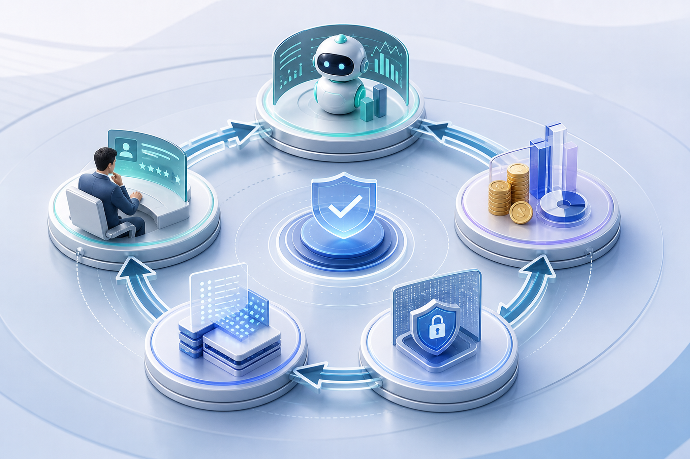

에이전트 평가의 제품화
딥 에이전트는 단일 답변보다 도구 호출, 중간 상태, 다중 턴, 안전성까지 함께 검증해야 한다. 코드 기반 채점, 모델 기반 채점, 사람 검토를 조합한 평가 하네스가 운영 필수 요소로 올라왔다.
이번 실행에서는 신규 게시물이 감지되지 않았으므로, 최근 24시간 내 로컬에 수집된 공식 아마존웹서비스 블로그 자료를 보조 입력으로 사용했다. 핵심 흐름은 명확하다. 기업의 생성형 인공지능 경쟁력은 모델 호출 자체보다 평가, 관측성, 비용 귀속, 보안 통제, 운영 개선 루프를 얼마나 빨리 제도화하느냐에 달려 있다.
오늘의 한 줄 결론: 기업형 인공지능은 “만드는 조직”보다 “평가하고 운영하며 개선하는 조직”이 이긴다.
딥 에이전트는 단일 답변보다 도구 호출, 중간 상태, 다중 턴, 안전성까지 함께 검증해야 한다. 코드 기반 채점, 모델 기반 채점, 사람 검토를 조합한 평가 하네스가 운영 필수 요소로 올라왔다.
대규모 언어 모델 추론은 그래픽처리장치 사용률과 지연시간만으로 충분하지 않다. 정확성, 관련성, 안전성, 전문적 어조 같은 품질 지표를 비용·성능 지표와 함께 봐야 한다.
한국 기업의 전사 확산은 멋진 시연보다 감사 가능한 로그, 회귀 테스트, 비용 귀속, 품질 기준, 사람 검토 절차가 있을 때 빨라진다.
최근 아마존웹서비스 머신러닝 블로그 흐름은 생성형 인공지능 운영의 관심이 “모델을 어디에 배포할 것인가”에서 “운영 중인 모델과 에이전트를 어떻게 신뢰할 것인가”로 이동했음을 보여준다. 랭스미스 기반 딥 에이전트 평가는 계획·도구·상태·최종 답변을 함께 기록하고 채점하는 방식을 강조한다. 세이지메이커 인공지능 추론 관측성 글은 성능·비용·품질·안전성을 같은 대시보드에서 상관 분석해야 한다고 설명한다.
이는 기업 인공지능 조직의 역할도 바꾼다. 플랫폼팀은 모델 엔드포인트를 제공하는 데서 끝나지 않고, 평가 데이터셋, 채점 기준, 운영 트레이스, 재학습 후보, 비용 한도, 위험 이벤트를 묶는 운영 플랫폼을 제공해야 한다.

| 우선순위 | 실행 과제 | 의미 | 주의점 |
|---|---|---|---|
| 1 | 평가 하네스 구축 | 에이전트의 도구 호출, 중간 상태, 최종 답변을 반복 가능하게 검증한다. | 최종 답변만 채점하면 오류 전파를 놓칠 수 있다. |
| 2 | 품질 관측성 도입 | 성능·비용 지표와 응답 품질 지표를 같은 화면에서 본다. | 평가 모델 버전, 데이터 샘플링, 민감정보 처리 기준이 필요하다. |
| 3 | 회귀 테스트 운영 | 운영 실패 사례를 다음 배포의 검증 케이스로 전환한다. | 초기 역량 평가와 회귀 평가는 목표 통과율이 다르다. |
| 4 | 비용 귀속과 책임 구조 | 모델별·업무별 비용과 품질을 연결해 개선 우선순위를 정한다. | 공유 인프라에서는 책임 소재가 흐려지기 쉽다. |
설비 장애 분석, 품질 문서 검색, 운영 지식 자동화는 평가 데이터셋과 사고 재현성이 핵심이다. 현장 적용 전 회귀 테스트와 사람 승인 절차를 마련해야 한다.
상담, 심사, 이상거래 분석은 안전성·설명 가능성·감사 로그가 확산의 전제다. 모델 품질 지표와 규제 대응 근거를 함께 보관해야 한다.
대규모 사용자 업무에 에이전트를 붙일수록 비용 귀속, 지연시간, 품질 드리프트 탐지가 중요하다. 운영 화면은 기술 지표와 사업 지표를 함께 보여줘야 한다.
대표 업무 3개를 고르고 입력, 기대 결과, 금지 행동, 사람 검토 기준을 정의한다.
오프라인 평가 결과와 운영 트레이스를 연결하고, 낮은 점수의 실행을 재현 가능한 회귀 케이스로 만든다.
품질, 비용, 안전성, 사용자 만족도 기준을 통과한 업무만 전사 확산 후보로 올린다.
가장 큰 위험은 “작동한다”는 판단을 너무 빨리 내리는 것이다. 에이전트는 정상 응답처럼 보이지만 위험한 도구를 호출하거나, 다중 턴에서 앞선 오류를 누적하거나, 비용 대비 품질이 낮을 수 있다. 따라서 배포 승인 조건에는 평가 통과율, 안전성 점수, 운영 대시보드, 사람 검토 비율, 장애 재현 절차가 함께 들어가야 한다.
이번 실행의 새 수집 건수는 0건이다. 전략 해석은 최근 24시간 내 로컬 수집 자료와 직전 공식 아마존웹서비스 블로그 수집물을 보조 입력으로 사용했다. 일부 최신성은 확인 필요로 표시한다.
이미지 생성에는 지피티 이미지 투를 사용했으며, 실제 로고와 긴 문구 삽입은 피했다. 상세 프롬프트는 함께 저장된 프롬프트 기록 파일에 보존했다.